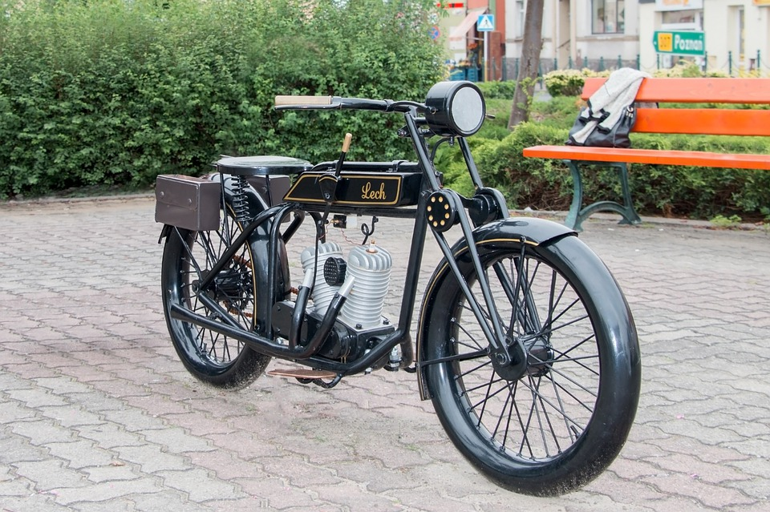
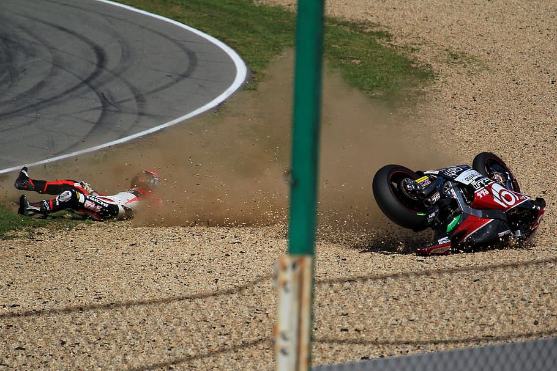

The term motorcycle has different legal definitions depending on jurisdiction (see #Legal definitions and restrictions).
There are three major types of motorcycle: street, off-road, and dual purpose.
Within these types, there are many sub-types of motorcycles for different purposes.
There is often a racing counterpart to each type, such as road racing and street bikes,
or motocross and dirt bikes.
Street bikes include cruisers, sportbikes, scooters and mopeds, and many other types.
Off-road motorcycles include many types designed for dirt-oriented racing classes such as motocross and are not street legal in most areas.
Dual purpose machines like the dual-sport style are made to go off-road but include features to make them legal and comfortable on the street as well.
Each configuration offers either specialised advantage or broad capability,
and each design creates a different riding posture.
In some countries the use of pillions (rear seats) is restricted.
History

The first internal combustion, petroleum fueled motorcycle was the Daimler Reitwagen.
It was designed and built by the German inventors Gottlieb Daimler and Wilhelm Maybach in Bad Cannstatt,
Germany in 1885.
This vehicle was unlike either the safety bicycles or the boneshaker bicycles of the era in that it had zero degrees of steering axis angle and no fork offset,
and thus did not use the principles of bicycle and motorcycle dynamics developed nearly 70 years earlier.
Instead, it relied on two outrigger wheels to remain upright while turning.
The inventors called their invention the Reitwagen ("riding car").
It was designed as an expedient testbed for their new engine, rather than a true prototype vehicle.
Butler's Patent Velocycle
The first commercial design for a self-propelled cycle was a three-wheel design called the Butler Petrol Cycle,
conceived of Edward Butler in England in 1884.
He exhibited his plans for the vehicle at the Stanley Cycle Show in London in 1884.
The vehicle was built by the Merryweather Fire Engine company in Greenwich, in 1888.
The Butler Petrol Cycle was a three-wheeled vehicle, with the rear wheel directly driven by a 5⁄8 hp
(0.47 kW),
40 cc (2.4 cu in) displacement, 2 1⁄4 in × 5 in (57 mm × 127 mm) bore × stroke,
flat twin four-stroke engine (with magneto ignition replaced by coil and battery)
equipped with rotary valves and a float-fed carburettor (five years before Maybach) and Ackermann steering,
all of which were state of the art at the time.
Starting was by compressed air.
The engine was liquid-cooled, with a radiator over the rear driving wheel.
Speed was controlled by means of a throttle valve lever.
No braking system was fitted; the vehicle was stopped by raising and lowering the rear driving wheel using a foot-operated lever;
the weight of the machine was then borne by two small castor wheels.
The driver was seated between the front wheels.
It wasn't, however, a success, as Butler failed to find sufficient financial backing.
Many authorities have excluded steam powered,
electric motorcycles or diesel-powered two-wheelers from the definition of a 'motorcycle',
and credit the Daimler Reitwagen as the world's first motorcycle. Given the rapid rise in use of electric motorcycles worldwide,
defining only internal-combustion powered two-wheelers as 'motorcycles' is increasingly problematic.
If a two-wheeled vehicle with steam propulsion is considered a motorcycle,
then the first motorcycles built seem to be the French Michaux-Perreaux steam velocipede which patent application was filled in December 1868,
constructed around the same time as the American Roper steam velocipede,
built by Sylvester H. Roper Roxbury, Massachusetts.
who demonstrated his machine at fairs and circuses in the eastern U.S. in 1867,
Roper built about 10 steam cars and cycles from the 1860s until his death in 1896
Technical aspects
Construction
Motorcycle construction is the engineering, manufacturing,
and assembly of components and systems for a motorcycle which results in the performance, cost, and aesthetics desired by the designer.
With some exceptions, construction of modern mass-produced motorcycles has standardised on a steel or aluminium frame, telescopic forks holding the front wheel,
and disc brakes. Some other body parts,
designed for either aesthetic or performance reasons may be added.
A petrol powered engine typically consisting of between one and four cylinders (and less commonly,
up to eight cylinders) coupled to a manual five- or six-speed sequential transmission drives the swingarm-mounted rear wheel by a chain, driveshaft, or belt.
Repair can be done using a Motorcycle lift.
Fuel economy
Motorcycle fuel economy varies greatly with engine displacement and riding style.
A streamlined, fully faired Matzu Matsuzawa Honda XL125 achieved 470 mpg‑US
(0.50 L/100 km; 560 mpg‑imp) in the Craig Vetter Fuel Economy Challenge "on real highways – in real conditions."
Due to low engine displacements (100–200 cc (6.1–12.2 cu in)), and high power-to-mass ratios,
motorcycles offer good fuel economy.
Under conditions of fuel scarcity like 1950s Britain and modern developing nations,
motorcycles claim large shares of the vehicle market.
Electric motorcycles
Very high fuel economy equivalents are often derived by electric motorcycles.
Electric motorcycles are nearly silent, zero-emission electric motor-driven vehicles.
Operating range and top speed are limited by battery technology.
Fuel cells and petroleum-electric hybrids are also under development to extend the range and improve performance of the electric drive system.
Accessories
Various features and accessories may be attached to a motorcycle either as OEM (factory-fitted) or aftermarket.
Such accessories are selected by the owner to enhance the motorcycle's appearance, safety,
performance, or comfort, and may include anything from mobile electronics to sidecars and trailers.
Safety

Motorcycles have a higher rate of fatal accidents than automobiles or trucks and buses.
United States Department of Transportation data for 2005 from the Fatality Analysis Reporting System show that for passenger cars,
18.62 fatal crashes occur per 100,000 registered vehicles. For motorcycles this figure is higher at 75.19 per 100,000 registered vehicles – four times higher than for cars.
The same data shows that 1.56 fatalities occur per 100 million vehicle miles travelled for passenger cars,
whereas for motorcycles the figure is 43.47 which is 28 times higher than for cars (37 times more deaths per mile travelled in 2007).
Furthermore, for motorcycles the accident rates have increased significantly since the end of the 1990s, while the rates have dropped for passenger cars.
Motorcycle rider postures
Sport – the rider leans forward into the wind and the weight of the upper torso is supported by the rider's core at low speed and air pressure at high speed.
Standard – the rider sits upright or leans forward slightly. The feet are below the rider. These are motorcycles that are not specialised to one task, so they do not excel in any particular area.
Cruiser – the rider sits at a lower seat height with the upper torso upright or leaning slightly rearward. Legs are extended forwards, sometimes out of reach of the regular controls on cruiser pegs.